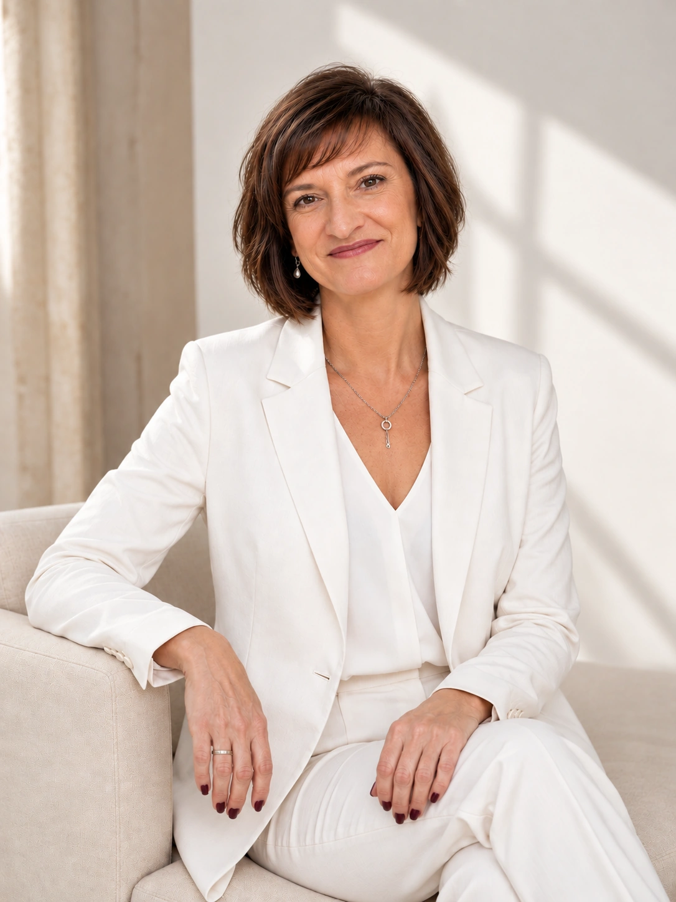
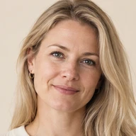
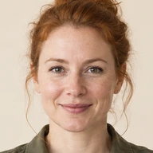

Технический специалист GetCourse
Вы занимаетесь продуктом и развитием проекта — техническую часть беру на себя.

Онлайн-проекты · Настройка · Автоматизация · Спокойствие
Частые задачи
Эксперты и продюсеры онлайн-школ — от первого запуска до действующих проектов со сложными воронками.
От «с чего начать?» до «а такое вообще возможно?» ♡
«Не знаю, с чего начать»
«Курс уже записан. Что теперь нужно настроить?»

«Скоро запуск, а мы ничего не успеваем»

«Нарисовали воронку. Кто теперь всё это соберёт?»
«Почему после оплаты человек не получил доступ?»
«У нас уже есть GetCourse, но страшно что-нибудь трогать»
«У меня нестандартная задача. Такое вообще возможно сделать?»
Бесплатно · для первого запуска
«Не знаю, с чего начать»
Это бесплатный помощник в ChatGPT, которого я создала для экспертов перед первым запуском.
Он поможет понять:
Разбираться в GetCourse заранее не нужно.
Составить маршрут запуска→БесплатноРаботает в ChatGPT
Для прохождения понадобится аккаунт ChatGPT и доступ к сервису в поддерживаемом регионе. GetCourse устанавливать или настраивать не нужно.
Ваш маршрут к успешному запуску ♡
Форматы работы
Можно начать с первого запуска, передать мне техническую часть целиком или подключить к уже работающему проекту.
Если запускаете первый онлайн-продукт и хотите сразу собрать техническую основу правильно.
Если хотите полностью передать мне техническую часть запуска — от настройки GetCourse до воронок и автоматизации.
Если проект уже работает и нужен специалист, который возьмёт на себя текущие технические задачи и развитие системы.
Сложные воронки, интеграции и нестандартные технические решения рассчитываю отдельно. Напишите мне — разберём вашу задачу и найдём оптимальное решение.
Прозрачный процесс
Вы всегда знаете, что происходит с проектом. ♡
Пишете мне в Telegram и рассказываете задачу своими словами. Уточняю детали и определяю объём работ.
Первые 15 минут бесплатноПредлагаю техническое решение, фиксируем объём, сроки и стоимость.
Без неожиданных доплатНастраиваю GetCourse, оплаты, рассылки, процессы и интеграции. Перед запуском проверяю путь клиента от первого шага до результата.
Проверяю путь ученикаВ день запуска остаюсь на связи. После передачи проекта объясняю, как всё устроено и что важно контролировать.
Остаюсь на связиСо мной безопасно
Мне важно не просто выполнить настройку, а собрать решение, которое соответствует задаче и нормально работает после запуска.
Если задачу можно решить проще — предложу простой вариант. Если что-то технически невозможно или не имеет смысла — скажу до начала работ.
Проект веду лично. Вы обсуждаете технические решения со мной, без менеджеров и передачи задачи по цепочке.
До настройки продумываю сценарии: оплаты, доступы, письма, переходы, исключения — и что должно произойти, если что-то пошло не по плану.
Проверяю результат и остаюсь на связи по согласованному формату сопровождения.
«С тобой безопасно, легко и точно знаешь, что ничего нерешаемого нет. Техническая фея — не иначе.»
Хорошие проекты начинаются с доверия ♡
Отзывы
Лучше меня о моей работе расскажут те, кто уже доверил мне свой проект ♡
Листайте вбок →
Елена настроила мне GetCourse под ключ — всё сделала быстро и очень грамотно.
… Больше всего понравилось, что мне почти не пришлось вникать в процессы: я объяснила, что хочу, и получила готовую настроенную платформу. Это редкость.
Минимум вашего вовлечения — максимальный результат
… Геткурс сделала мне за 11 часов!
У меня была срочность, но я не надеялась, если честно. Очень грамотно и доступно объясняет! Реально крутая! Советую!
Даже в сжатые сроки — всё возможно
… Курс большой с видеозаписями, тестами, заданиями и для англоязычной аудитории.
… Всё было готово к нужному сроку. Елена быстро отвечает, когда времени мало — это очень важно.
Надёжность и ответственность
… После настройки автовеба, продажи пошли в гору!
Будем обращаться ещё, т.к. для нас это непростые и долгие настройки. Вы экономите время и нервы! Бесконечно рады сотрудничеству с Вами
Сложные настройки — на мне
… Она настоящий эксперт в своем деле
быстро разобралась с задачами, оперативно настроила все необходимые процессы и сделала это на высшем уровне. … Особенно приятно, что специалист всегда на связи, предлагает лучшие решения …
Экспертиза, которой можно доверять
Обо мне
Сначала разбираюсь в задаче, потом лезу в настройки. И иногда говорю: «А вот это в GetCourse делать вообще не нужно».
Техническая часть —
чтобы ваши идеи работали! ♡
Ваши запуски —
моя забота ♡
Перед тем как написать
Собрала то, что чаще всего спрашивают перед началом работы — от сроков и стоимости до подключения к уже работающему проекту.
Лучше задать вопрос сейчас, чем сомневаться потом
Напишите мне — разберём вашу ситуацию и подскажу, как лучше.
Да. Более того, на раннем этапе можно сразу правильно продумать техническую логику, структуру, воронку и избежать переделок перед запуском. Я помогу разобраться, что нужно подготовить и с чего лучше начать.
Да. Можно подключиться к существующему проекту: разобраться в текущих настройках, доработать нужное и не трогать то, что уже работает.
Да. Не обязательно заказывать запуск целиком. Отдельные и нестандартные технические задачи оцениваются после короткого разбора.
Зависит от задачи: отдельная настройка и сложная система требуют разного времени. После разбора фиксируем объём, сроки и стоимость до начала работ.
Можно прийти даже без технического ТЗ. Достаточно рассказать, что уже есть и что должно получиться. Я задам вопросы и определю, какие материалы и доступы понадобятся.
Я проверяю результат, объясняю, как всё устроено и что важно контролировать. Если проекту нужна дальнейшая техническая поддержка, можно перейти на сопровождение.
Стоимость зависит от объёма и сложности технической логики. После разбора задачи вы заранее знаете, что входит в работу и сколько это стоит.
Стоимость
Основные варианты — чтобы вы могли сориентироваться. Точный объём, сроки и стоимость фиксируем после разбора задачи.
Разные проекты — разные задачи. Главное — подходящий формат ♡
Для экспертов, которые впервые запускают онлайн-продукт и готовы перейти от подготовки к технической настройке.
Полностью готовый проект, через который уже можно принимать первых учеников.
Стоимостьот 35 000 ₽
Обсудить проектПолностью беру техническую часть запуска на себя. Вы занимаетесь экспертностью, продажами и учениками.
Полностью готовая система запуска, которую можно использовать сразу после передачи проекта.
Состав работ и границы проекта фиксируем до начала настройки.
Стоимостьот 60 000 ₽
Обсудить проектДля действующих онлайн-школ, которым нужен надёжный технический специалист на постоянной основе.
Проект развивается стабильно, а все технические вопросы решаются без вашего участия.
Стоимостьот 45 000 ₽ / месяц
Обсудить проектТакие задачи рассчитываю отдельно. Напишите — разберём вашу ситуацию.
Расскажите о проекте своими словами. Я задам несколько вопросов и предложу подходящий вариант — без необходимости выбирать его заранее.
Обычно отвечаю в течение 15 минут
На связи
Не нужно готовить техническое ТЗ. Просто расскажите, что у вас сейчас и что хотите получить.
Написать в TelegramОтвечу лично и задам несколько вопросов по задаче.
Можно начать просто с вопроса ♡
А за работой, кейсами и полезными материалами можно следить здесь:
Спасибо, что были здесь! ♡
Технический специалист GetCourse